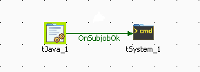

|
Component family |
System | ||||
|
Function |
tSystem executes one or more system commands. | ||||
|
Purpose |
tSystem can call other processing commands, already up and running in a larger Job. | ||||
|
Basic settings |
Use home directory |
Select this check box to change the name and path of a dedicated directory. | |||
|
|
Command |
Enter the system command. Note that the syntax is not checked.
| |||
|
|
Standard Output and Error Output |
Select the type of output for the processed data to be transferred to. | |||
|
|
|
to console: data is passed on to be viewed in the Run view. | |||
|
|
|
to global variable: data is passed on to an output variable linked to the tSystem component. | |||
|
|
|
to console and to global variable: data is passed on to the Run view and to an output variable linked to the tSystem component. | |||
|
|
|
normal: data is passed on to the component that comes next. | |||
|
|
Schema and Edit Schema |
A schema is a row description, i.e., it defines the number of fields that will be processed and passed on to the next component. The schema is either built-in or remote in the Repository. Click Edit Schema to make changes to the schema. Note that if you make changes, the schema automatically becomes built-in. Click Sync columns to retrieve the schema from the preceding component in the Job. | |||
|
|
|
Built-in: You create and store the schema locally for this component only. Related topic: see Talend Open Studio User Guide. | |||
|
|
|
Repository: You have already created the schema and stored it in the Repository. You can reuse it in various projects and job flowcharts. Related topic: see Talend Open Studio User Guide | |||
|
|
Environment variables |
Click the [+] button to add as many global variables as needed. name: Enter the syntax of the new variable. value: Enter a value for this variable according to the context. | |||
|
Usage |
This component can typically used for companies which already implemented other applications that they want to integrate into their processing flow through Talend. | ||||
|
Global Variables |
|
Standard Output: Returns the standard output from a process. This is available as an After variable Returns a string.
Error Output: Returns the erroneous output from a process. This is available as an After variable. Returns a string.
Exit Value: Returns an exit code. This is available as an After variable. Returns an integer: - if there are no errors > the exit code is 0. - if there are errors > the exit code is 1.
For further information about variables, see Talend Open Studio User Guide. | |||
|
Connections |
|
Outgoing links (from one component to another): Row: Main. Trigger: On Subjob Ok; On Subjob Error; Run if.
Incoming links (from one component to another): Row: Main; Reject; Iterate. Trigger: On Subjob Ok; On Subjob Error; Run if; On Component Ok; On Component Error; Synchronize; Parallelize.
For further information regarding connections, see Talend Open Studio User Guide. | |||
|
Limitation |
n/a | ||||
![[Warning]](../images/warning.png)
This Java scenario is a two-component Job that executes a system command and shows the results in the Run view “console”.
Drop a tJava and a tSystem components from the Palette to the design workspace.
Connect the two components together using a Trigger > OnSubjobOk link between the two components.
|  |
When executing the Job, the first component triggers the second one.
Double-click tSystem to open the Basic settings view and display the component properties.
 |
In the Command field, enter the
echocommand followed by the string to display, “Hello World!” in this example.In the Standard Output field, select to a global variable to send the output to a global variable.
Keep the by-default parameters in the other fields.
Double-click tJava to open the Basic settings view and define the component properties.
 |
Enter the following Java command to display the tSystem output variable in the console:
System.out.println(“Hello World!”);Save your Job and press F6 to execute it.
 |
The Job executes an echo command and shows the output in the Console of the Run view using a
Println
command in the tJava component.